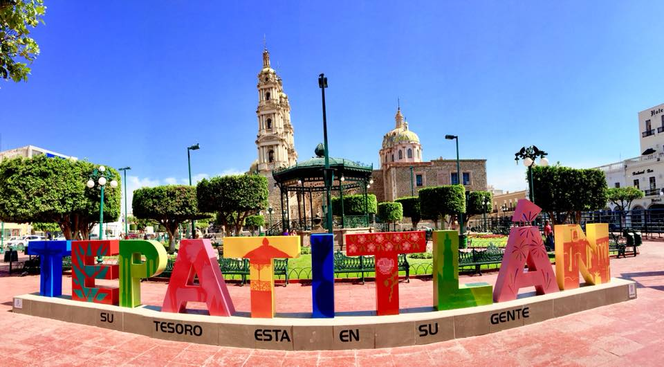

Tepatitlán de Morelos
“Donde la vida es un primor”
Tepatitlán de Morelos, cariñosamente llamado Tepa, es una joya alteña que combina tradición, historia y modernidad. Su gente cálida y trabajadora, la devoción religiosa y la riqueza cultural se reflejan en sus fiestas de abril, su arquitectura colonial y su gastronomía típica. En cada rincón se vive la esencia de Los Altos de Jalisco.
Ver en Google Maps